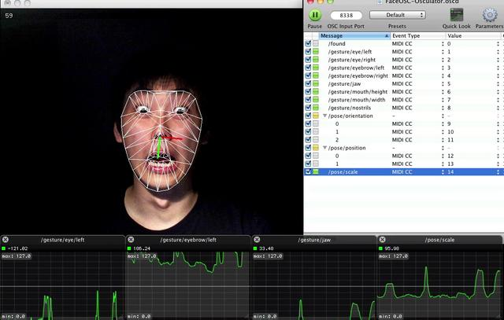
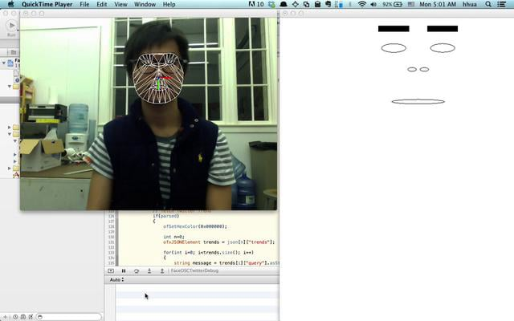

Installation Art 2: Day 2
Installation Art 2: Day 2
Installation Art 2: Day 2
Installation Art 2: Day 2
Slides are here:
http://mhellar.github.io/mhellar/ga_iart2/day2
Assets are here:
http://bit.ly/1ksBHty
- Face OSC
- Learning To Solder
- Intro to Sketchup
Topics for This Today:
Cory Arcangel
Rafael Lozano-Hemmer
Steina Vasulka
William Kentridge
Face OSC
 https://github.com/kylemcdonald/ofxFaceTracker/downloadsFace OSC Templates
 https://github.com/CreativeInquiry/FaceOSC-TemplatesFace OSC send data over port 8338

There's a simple Node reciever program in the assets folder, osc_faceosc
Soldering
Excercise 1: Solder a row of header pins into some perfboard
Excercise 2: Create a functional circuit on a breadboard then soder it on perfboard
Example Circuit: Charlieplexing


SketchUp

Excercise 1: Create a sculpture